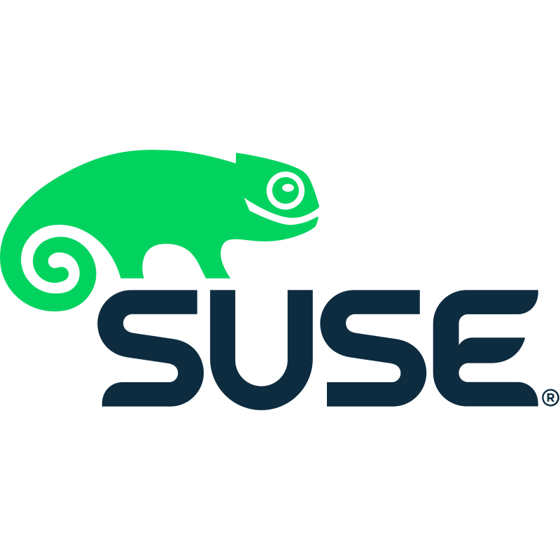
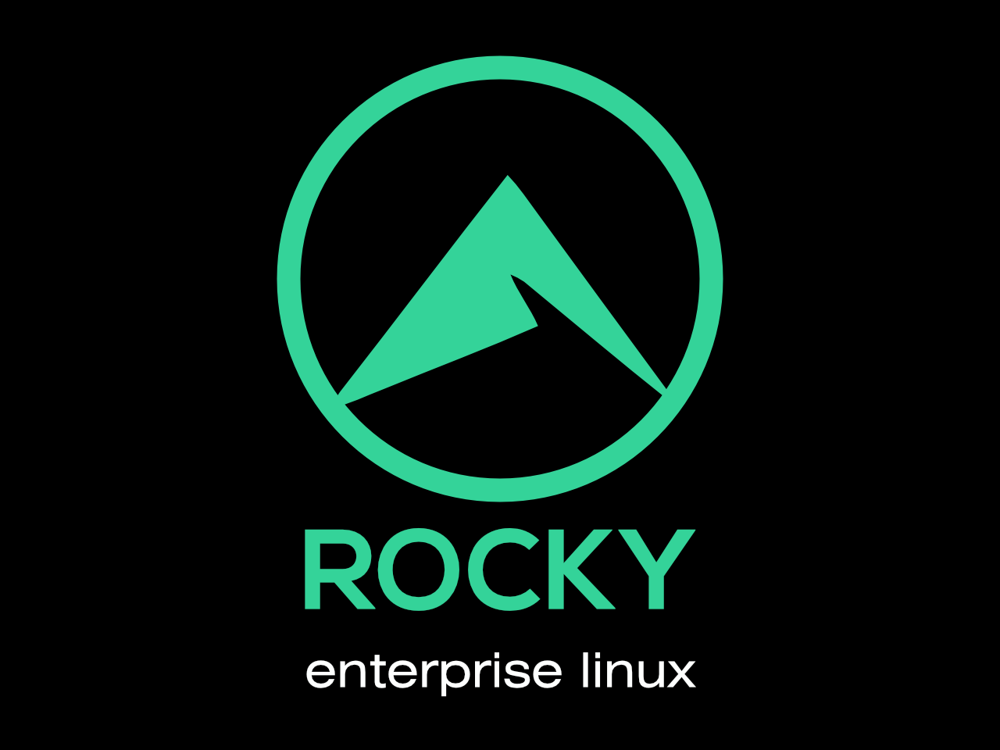
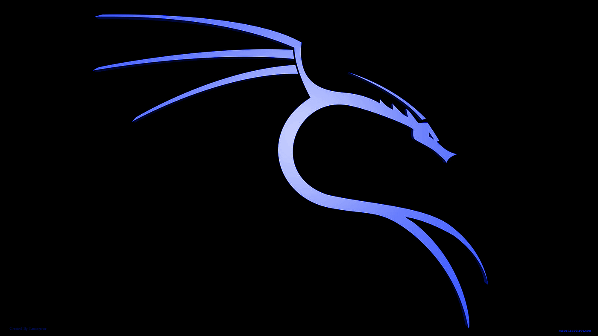
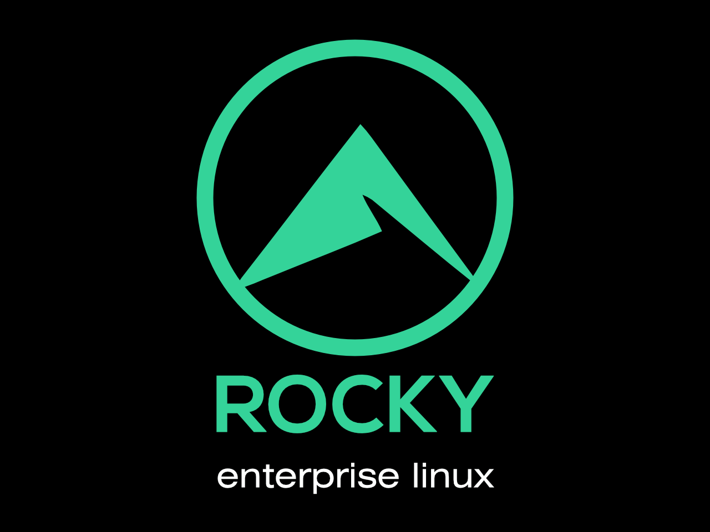
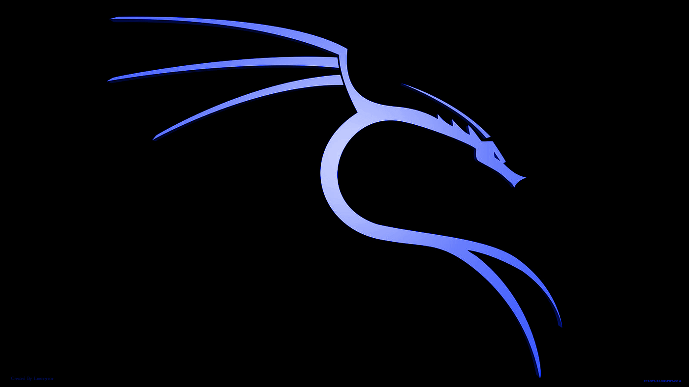
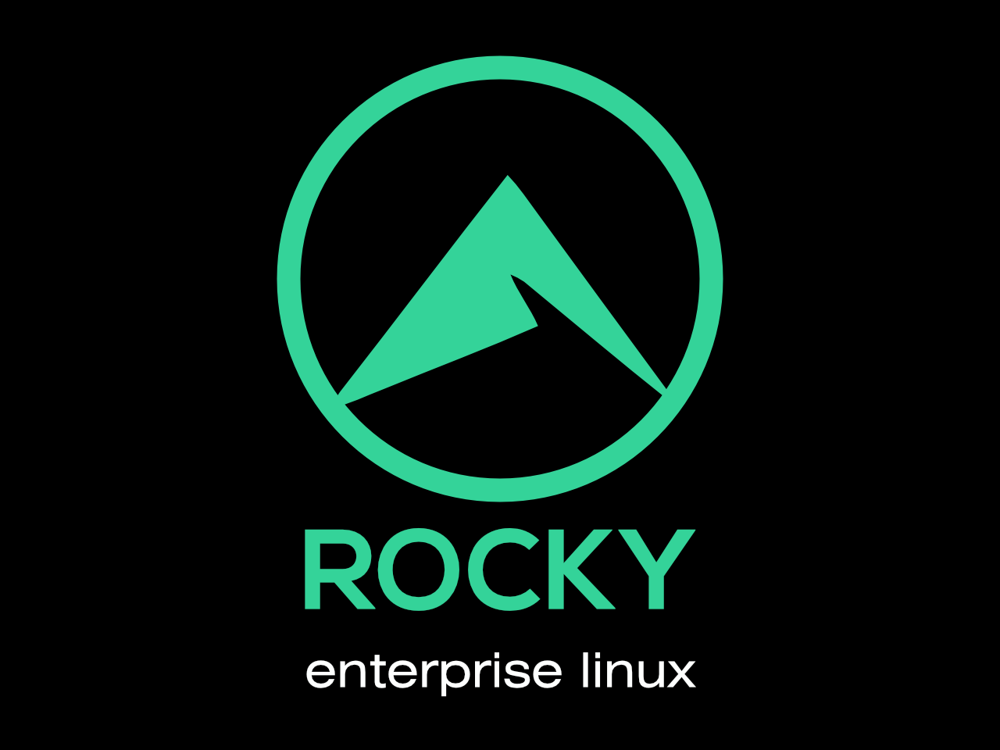
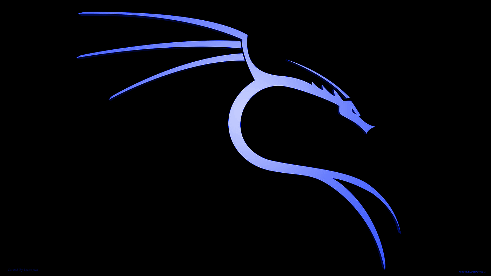

Koosha Yeganeh Gnu Linux Softwares
KYGnus has been and will be one of the greatest actions towards freedom. The thinking behind Linux and free software should spread to all fields of knowledge to witness the improvement of society and the world. We all owe a debt of gratitude to people like Linus Torvalds and Richard Stallman. Because the movement started by these people can be said to change the direction of the IT field. If we all use software in this field and every bug and problem of this system is discovered and solved very quickly, it is the result of the thinking and hard work of these people. "Being open shows everyone who is really doing the work and no one can hide behind their manager anymore".

 





KYGnus
Copyright KYGnus